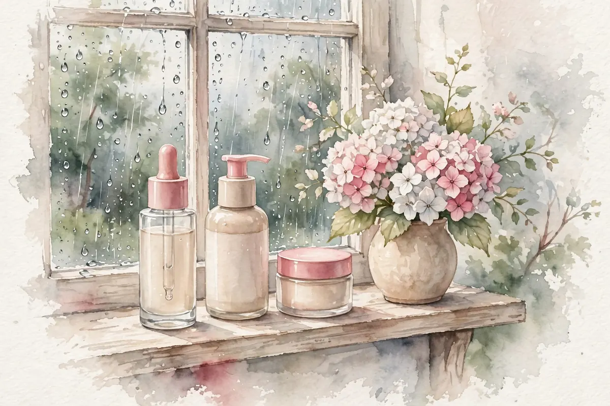

トップ ＞ スキンケア ＞ 梅雨どきのスキンケア：使用感と保管の工夫
梅雨どきのスキンケア：使用感と保管の工夫

梅雨どきは、空気中の水分が多く、肌の感触も、アイテムの使用感も、乾いた季節とは変わります。同じ手順でもべたつきが気になる日が増える季節です。この記事では、梅雨に合わせた調整の考え方を整理します。
使用感は「軽さ」へ寄せて調整する
湿度が高い日は、肌表面に水分が残りやすく、重いテクスチャーはべたつきとして感じやすくなります。仕上げの量を気持ち少なめにする、軽い使用感のアイテムに寄せる、といった調整が考えられます。ただし、量を減らしすぎるとケアの手順そのものが細くなるので、減らすのは「仕上げの重ね方」から、という順序がおすすめです。
朝のケアでは、そのあとのメイクや日中の過ごし方も関係します。べたつきが気になる日は、付けてから少し時間を置いてなじませるなど、時間の使い方でも調整できます。季節の調整は、買い替えだけでなく、使い方の調整でもできます。
保管は「湿気と水はね」を避ける
梅雨は、保管環境の見直しどきでもあります。浴室の中は湿気がこもりやすい場所です。容器の保管は、洗面所の中でも水はねの届かない、風通しのよい場所が基本です。棚の奥に長く置いたままのものがないか、この機会に確認してください。
容器の外側についた水滴は、そのつど拭き取る習慣を持つと清潔を保てます。ポンプの口まわりやキャップの内側は、湿気が残りやすい場所です。詰め替え容器も同様に、詰め替えの前にはよく乾かすことが大切です。
洗濯物やタオルの管理も連動させる
梅雨は、タオルが乾きにくい季節でもあります。顔用のタオルは、使用後にしっかり干せる場所を確保し、乾きにくい日は替えの枚数を回す工夫をしてください。道具の清潔さは、ケアの土台です。
季節の変わり目は、手順と環境をまとめて見直す好機です。梅雨が明ければ、また調整は逆向きになります。季節ごとに小さく調整する習慣が、一年を通したケアの安定につながります。肌の状態で気になることが続く場合は、皮膚科などの専門家に相談してください。
換気のタイミングも、保管環境の調整
梅雨どきの洗面所は、入浴後の湿気がこもりがちです。入浴のあとは、ドアを開ける、換気扇を長めに回すなど、湿気を逃がす時間を作ってください。保管している容器のためにも、洗面所全体の空気の入れ替えは大切です。タオルの乾き具合も、この換気で変わります。
湿気の季節は、カビなどの心配も増える時期です。棚の拭き掃除の頻度を少し上げる、容器の底の水滴を拭う、といった基本の積み重ねが効いてきます。特別な道具は要りません。季節に合わせて、基本の頻度を調整することが、梅雨の工夫の中心です。
梅雨どきは、洗顔後のタオルの乾きにくさに加えて、泡立てネットなどの道具も湿りがちです。道具を干す場所の風通しを見直すことも、この季節の工夫に入ります。道具の清潔さは、湿気の季節ほど差が出るところです。
季節の工夫は、劇的な変化ではなく、小さな調整の集まりです。使用感、量、保管、換気、道具。この5つの視点を、梅雨入りと梅雨明けの2回、見直す習慣にしておくと、季節の変化に振り回されにくくなります。見直しの型を持つことが、季節との付き合い方です。
梅雨どきの使用感の調整では、朝と夜で分け方を変える方法もあります。朝は軽めに、夜は普段通りに、というように、時間帯ごとに役割を持たせると、一日の合計のバランスが取りやすくなります。調整は、全体を変えるのではなく、配分を変えることです。
湿気の多い日は、洗顔後のタオルの乾き具合も含めて、洗面所全体がしっとりしています。その環境自体を「季節の状態」として受け止め、無理に乾いた季節と同じ感覚を求めないことも、梅雨との付き合い方です。
季節の調整は、来年もまた巡ってきます。今年の工夫を短くメモしておけば、来年の梅雨の見直しが楽になります。季節の記録も、開封日と同じく、未来の自分のための材料です。
セラフィナ「梅雨は保管場所と使用感の見直しどきだね。季節で小さく調整しよう」